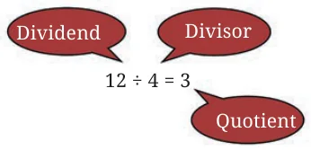
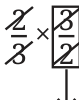
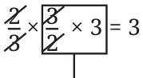
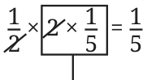
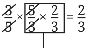

What is \(12 \div 4\)? You know this already. But can this problem be restated as a multiplication problem? What should be multiplied by 4 to get 12? That is,
\(4 \times ? = 12\)
We can use this technique of converting division into multiplication problems to divide fractions.
What is \(1 \div \frac{2}{3}\)?
Let us rewrite this as a multiplication problem
\(\frac{2}{3} \times ? = 1\)
What should be multiplied by \(\frac{2}{3}\) to get the product 1? If we somehow cancel out the 2 and the 3, we are left with 1.

\(\frac{2}{3} \times \frac{3}{2} = 1\)
Answer
So,
\(1 \div \frac{2}{3} = \frac{3}{2}\).
Let us try another problem:
\(3 \div \frac{2}{3}\).
This is the same as
\(\frac{2}{3} \times ? = 3\).
Can you find the answer? We know what to multiply \(\frac{2}{3}\) by to get 1. We just need to multiply that by 3 to get 3. So,

Answer
So,
\(3 \div \frac{2}{3} = \frac{3}{2} \times 3 = \frac{9}{2}\).
What is \(\frac{1}{5} \div \frac{1}{2}\)?
Rewriting it as a multiplication problem, we have
How do we solve this?

Answer
So,
\(\frac{1}{5} \div \frac{1}{2} = 2 \times \frac{1}{5} = \frac{2}{5}\).
What is \(\frac{2}{3} \div \frac{3}{5}\)?
Rewriting this as multiplication, we have
\(\frac{3}{5} \times ? = \frac{2}{3}\).
How will we solve this?

Answer
So,
\(\frac{2}{3} \div \frac{3}{5} = \frac{5}{3} \times \frac{2}{3} = \frac{10}{9}\).